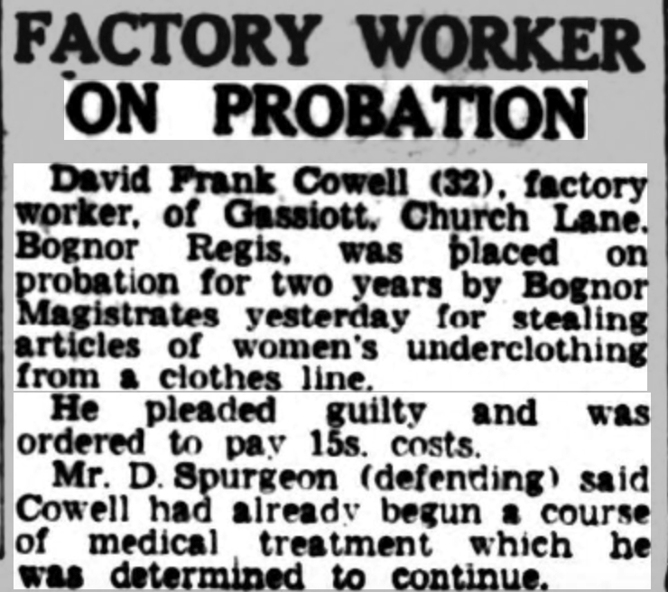
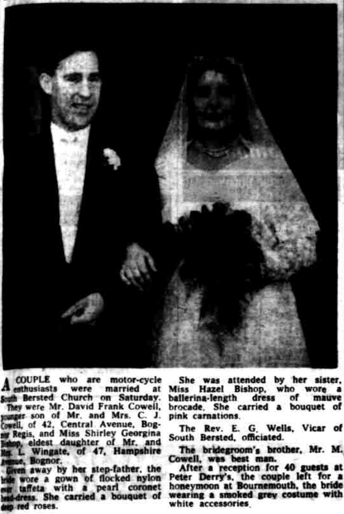
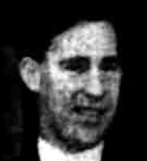
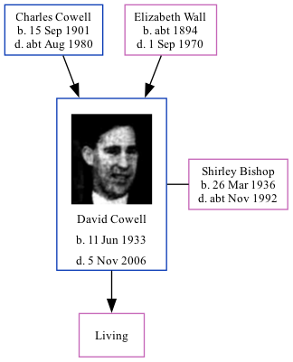

David Frank Cowell 1933 - 2006
[ Home ] | [ Calendar ] | [ Surnames Index ] | [ Family History ]A factory worker and the son of Charles Cowell (a tin smith) and Elizabeth Wall (a chocolate packer), David Cowell, the second cousin on the mother's side of <a href="I1.html">Nigel Horne</a>, was born in Westhampnett, Sussex, England on Jun 11, 1933<span class="citation">1,2</span> and. He married Shirley Bishop (with whom he had 1 surviving child) at St Mary Magdalene Church, South Bersted, West Sussex, England on Oct 10, 1959<span class="citation">4</span>. In 1956, he lived at Gassiott, Church Lane, Bognor Regis, West Sussex. <p>He died on Nov 5, 2006 in Portsmouth, Hampshire, England<span class="citation">2,3</span>.
Parents
- Charles John was born on Sep 15, 1901
- Elizabeth was born c. 1894
Citations
- England & Wales births 1837-2006 - Findmypast
- England & Wales deaths 1837-2007 - Findmypast
- England & Wales Government Probate Death Index 1960-2019 - Findmypast
- England & Wales marriages 1837-2008 - Findmypast
Media
Bognor Regis Observer 13 Jan 1956

Bognor Regis Observer - 16 Oct 1959

David Frank Cowell

England & Wales births 1837-2006 - BMD/B/1933/2/AZ/000236/111
England & Wales marriages 1837-2008 - BMD/M/1959/4/AZ/000236/045
England & Wales deaths 1837-2007 - BMD/D/2006/11/87025677
England & Wales Government Probate Death Index 1960-2019 - GBOR/GOVPROBATE/B/2005-2006/00092420
Family Tree
Generated by Ged2Site. Last updated on Jul 20, 2025